@jwq1
About
Work
Make
Write
Teach
Play
Play
Human-Centered Design
Human-Centered Design
Why HCD?
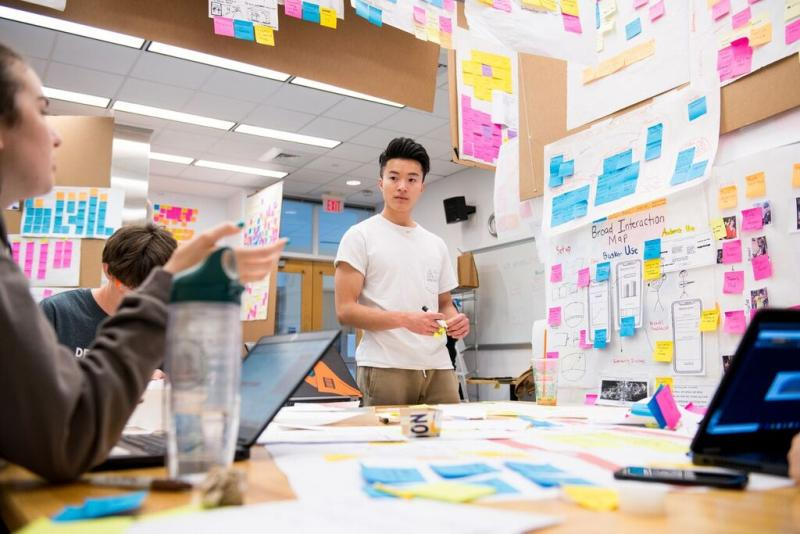
Olin College, where I attended and mentor.
Improve lives
Designing products for
Time Well Spent
Building products that are healthy for users.
Ethical Companies
Work for companies doing work that make the world better.
Encourage engagement
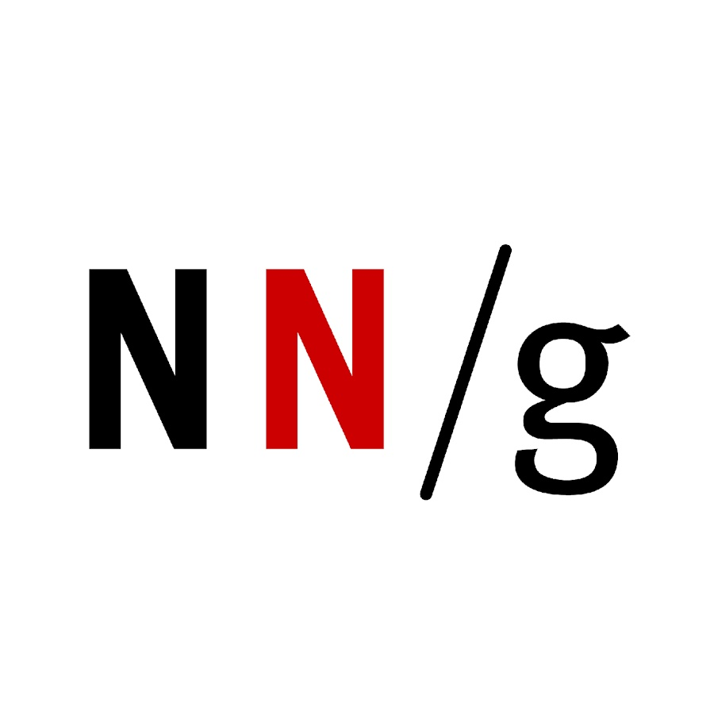
Nielsen Norman Group: UI Heuristics
Ground your design critiques in constructive, clear language.
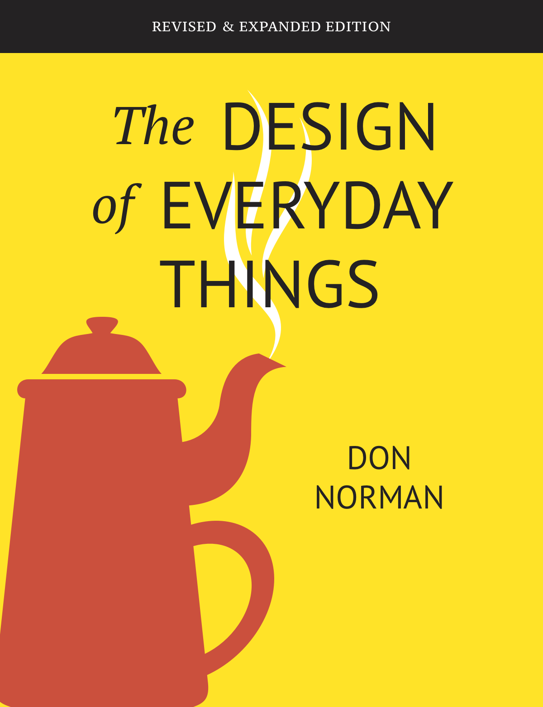
The Design of Everday Things
Make inuitive interfaces.
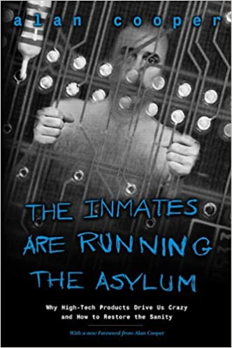
The Inmates are Running the Asylum
Recognize all problems come from the product.
Human-Computer Interaction
Coursework you should look for if you're interested in being an expert (
Olin
,
Universities
, and
Coursera
).
Motivate users
Reality is Broken
Help users persevere through the challenges in their
"jobs to be done."
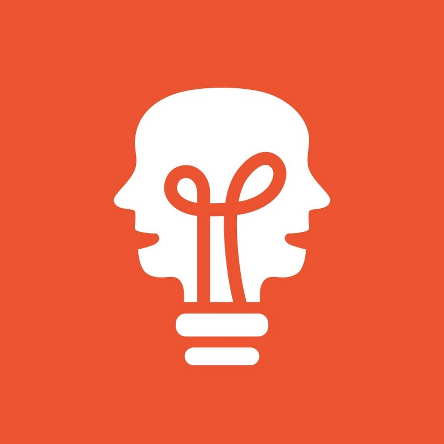
Behavioral Psychology
Build a user's motivation.
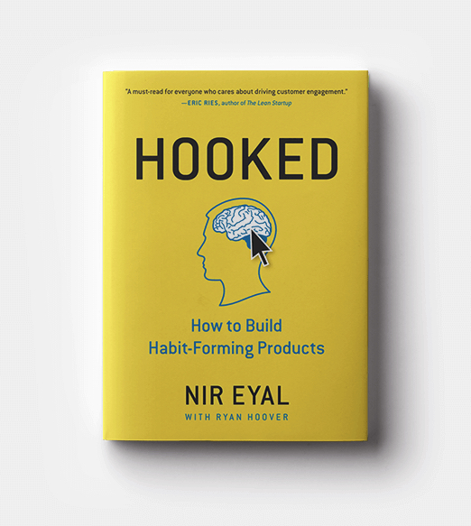
Hooked
Make it easy for users to take their vitamins. Learn how to build a virtuous cycle. Checkout Noom & Fitbod for excellent examples.
Understand customers
Design Exercises
Get inspired from IDEO, Olin, and Google Ventures design books.
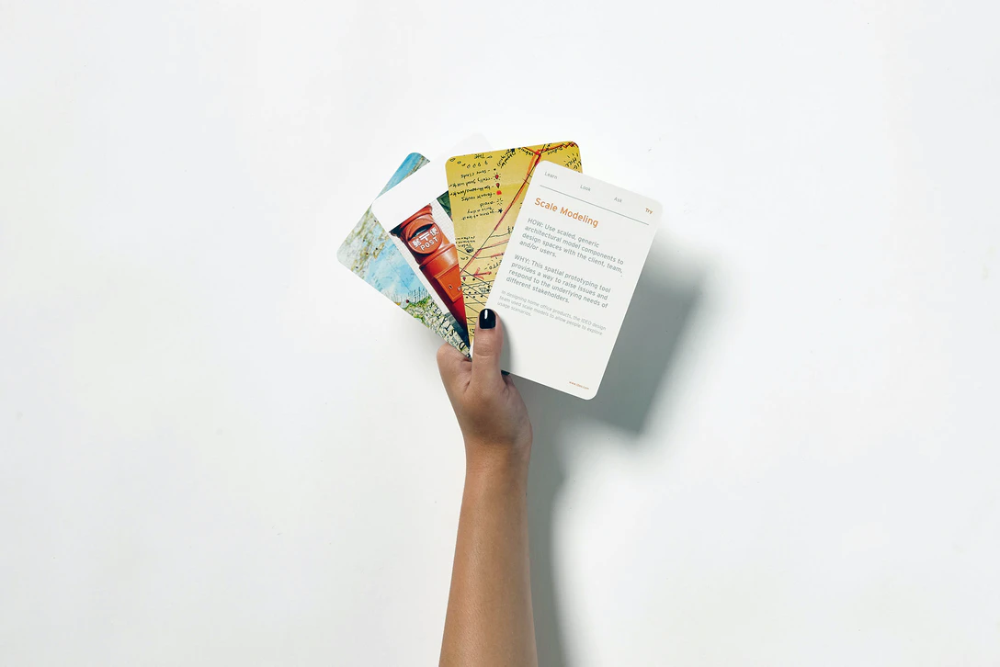
IDEO Method Cards
Experiment with users.
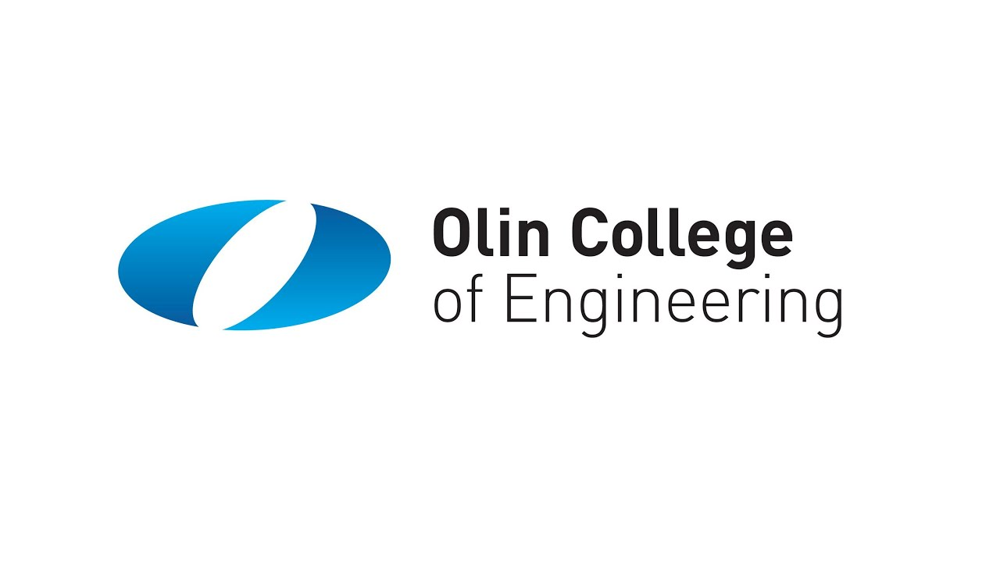
Full Programs
Enroll in the best design programs (i.e.,
Olin
College of Engineering (my program), the Stanford D-School, and Carnegie Mellon's HCI program).
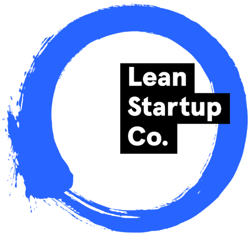
The Lean Startup
Validate your experiments.
Lead teams
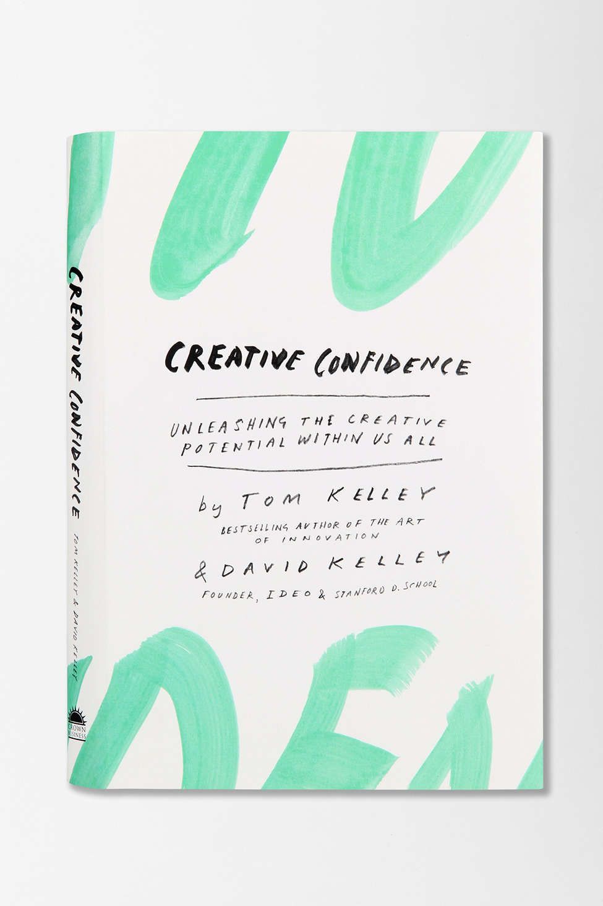
Creative Confidence
Facilitate ideation sessions with your nacent team.
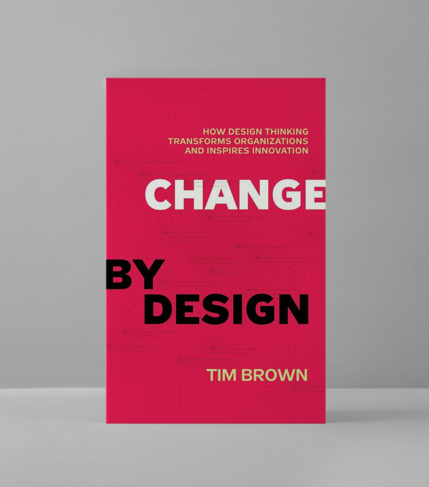
Change by Design
Build a holistic process.
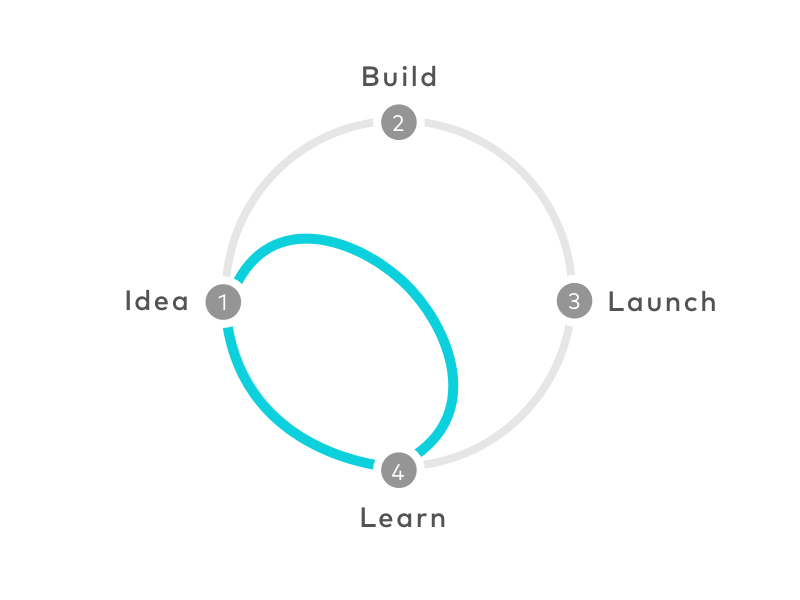
Design Sprint
Introduce your team to creative product development.
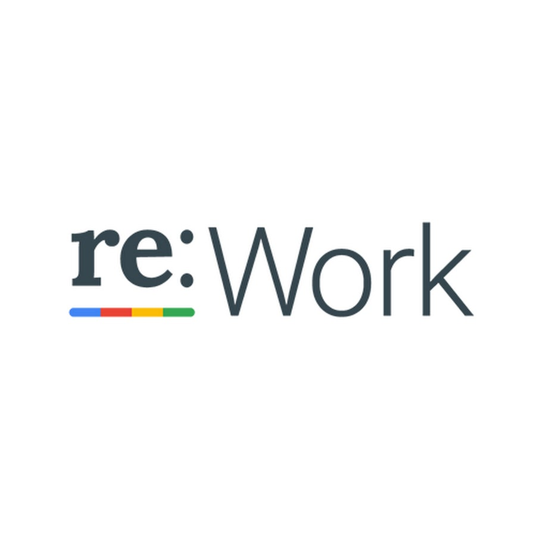
Psychological Safety
Build psychological safety
on remote teams (+
re:work
).